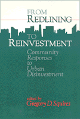

<body bgcolor="#FFFFFF" text="#000000" link="#0000FF" vlink="#CC0000" alink="#CC0000"><center><hr width="350" size="1" align="center" noshade>Community activists examine how formerly redlined communities have generated billions of dollars in reinvestment<hr width="350" size="1" align="center" noshade><p><a href="https://cdcshoppingcart.uchicago.edu/Cart/ChicagoBook.aspx?ISBN=9780877229841&&PRESS=temple" target="_top">Buy this book!</a> | <a href="https://cdcshoppingcart.uchicago.edu/Cart/Cart.aspx?PRESS=temple" target="_top">View Cart</a> | <a href="https://cdcshoppingcart.uchicago.edu/Cart/Cart.aspx?PRESS=temple" target="_top">Check Out</a></p><p></p></center><!--none//--><h1>From Redlining to Reinvestment</h1>
<h3>edited by Gregory D. Squires</h3>
<P>cloth 0-87722-984-8 $68.50, Dec 92, <FONT COLOR=#990033>Out of Stock Unavailable</FONT>
<br>paper 0-87722-985-6 $31.95, <FONT COLOR=#990033>Available</FONT>
<br>Electronic Book 1-43990-165-1 $31.95 <FONT COLOR=#990033>Out of Stock Unavailable</FONT>
<BR> 288 pp
6x9
</P><BLOCKQUOTE><I>"The gang's all here. Greg Squires has assembled...veterans of combat negotiation, and agreement with lenders.... These are the people who know what works and what doesn't."</I>
<br>&#151<b>Bill Dedman</b>, author of the Pulitzer Prize-Winning series "The Color of Money," published by the <I>Atlanta Journal/Constitution</I><I></I></BLOCKQUOTE>
<p>After decades of suffering redlining and disinvestment by financial institutions, many communities have learned to fight back successfully. In more than seventy U.S. cities, over 300 community-based organizations have negotiated at least eighteen billion dollars in reinvestment commitments in recent years. In original essays, well-known community activists and activist academics tell the stories of some of the most successful reinvestment campaigns in Boston, Pittsburgh, Detroit, Chicago, Milwaukee, Atlanta, and California.
<BR>&nbsp;<h2>Contents</h2><P>
<p>Foreword: Community Reinvestment is Good for Cities, Good For Lenders &#150 Edward McDonald
<br>1. Community Reinvestment: An Emerging Social Movement &#150 Gregory D. Squires
<br>2. The Struggle for Community Investment in Boston, 1989-1991 &#150 James T. Campen
<br>3. The Community Reinvestment Act and Neighborhood Revitalization in Pittsburgh &#150 John T. Metzger
<br>4. Confrontation, Negotiation, and Collaboration: Detroit's Multibillion-
Dollar Deal &#150 David Everett
<br>5. Reinvestments in Chicago Neighborhoods: A Twenty-Year Struggle &#150 Jean Pogge
<br>6. Milwaukee: A Tale of Three Cities &#150 Michael L. Glabere
<br>7. Reluctant Response to Community Pressure in Atlanta &#150 Larry E. Keating, Lynn M. Brazen, and Stan F. Fitterman
<br>8. California: Lessons from Statewide Advocacy, Local Government, and Private Industry Initiatives &#150 David Paul Rosen
<br>9. The Legacy, the Promise, and the Unfinished Agenda &#150 Calvin Bradford and Gale Cincotta
<br>About the Contributors
</P><BR>&nbsp;<H2>About the Author(s)</H2>
<P><b>Gregory D. Squires</b> is Professor of Sociology and a member of the Urban Studies Program faculty at the University of Wisconsin-Milwaukee. He is co-author of <I><a href="527_reg.html" target="_top">Chicago: Race, Class, and the Response to Urban Decline</a></I> (Temple).</P>
<P>Contributors: Calvin Bradford, Lynn M. Brazen, James T. Campen, Gale Cincotta, David Everett, Stan F. Fitterman, Michael L. Glabere, Larry E. Keating, Edward McDonald, John T. Metzger, Jean Pogge, David Paul Rosen, and the editor.</P>
<BR><H2>Subject Categories</H2>
<p><A HREF="/tempress/urban.html" TARGET="_top">Urban Studies</a>
<BR><A HREF="/tempress/labor.html" TARGET="_top">Labor Studies and Work</a>
</p>
<BR><h2 class="inpageheading">In the series</H2>
<P><I><a href="http://www.temple.edu/tempress/conflicts.html" onMouseOver="window.status='Click for other books in this series!'; return true;" onMouseOut="window.status=''; return true;" target="_top">Conflicts in Urban and Regional Development</a></i>, edited by John R. Logan and Todd Swanstrom.
</p><p><i>Conflicts in Urban and Regional Development</i>, edited by John R. Logan and Todd Swanstrom, includes books on urban policy and issues of city and regional planning, accounts of the political economy of individual cities, and books that compare policies across cities and countries.</p>
<p align="center"><a href="https://cdcshoppingcart.uchicago.edu/Cart/ChicagoBook.aspx?ISBN=9780877229841&&PRESS=temple" target="_top">Buy this book!</a> | <a href="https://cdcshoppingcart.uchicago.edu/Cart/Cart.aspx?PRESS=temple" target="_top">View Cart</a> | <a href="https://cdcshoppingcart.uchicago.edu/Cart/Cart.aspx?PRESS=temple" target="_top">Check Out</a></p><p><font face="Arial" size="1"><a href="copyright.html" onMouseOver="window.status='Web Copyright Policy';return true;" onMouseOut="window.status=''" title="Web Copyright Policy">&copy;</a> 2015 <a href="http://www.temple.edu" target="new" onMouseOver="window.status='Link to Temple University home page';return true;" onMouseOut="window.status=''" title="Link to Temple University home page">Temple University</a>. All Rights Reserved. http://www.temple.edu/tempress/titles/860_reg.html</font></p>